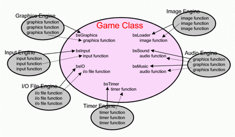

After we have successfully initialize and run our game skeleton (an empty game) in previous chapter, now it's time to utilize all GTGE engines to actually making a game!
GTGE has six game engines :
(see com.golden.gamedev.engine package)
- Graphics Engine
Contains functions related with screen graphics :
- Provide backbuffer where the game will be rendered.
- Flipping or copying the content of the backbuffer into the screen.
This engine also the one that initialize game graphics environment.
- Input Engine
Contains functions for polling user input from keyboard and mouse :
- Detect for keyboard button pressed.
- Detect for mouse button pressed.
- Detect for mouse location in the game. - Audio Engine
Contains functions to play audio sound :
- play multiple sounds simultaneously.
- play sound exclusively.
- play looping sound. - Timer Engine
Contains functions to manage game frame rate. - I/O File Engine
Contains functions to get File object, URL, and stream from external resource. - Image Engine
Contains functions to load image from a file with or without transparency (masking color).
Using Game Engine Within The Game
From previous chapter we already understand that every game is a subclass of Game class. Now let we see how we can use GTGE game engines right from Game class.
First, let we see a snippet of Game class :
public abstract class Game { public BaseGraphics bsGraphics; public BaseIO bsIO; public BaseLoader bsLoader; public BaseInput bsInput; public BaseTimer bsTimer; public BaseAudio bsMusic; public BaseAudio bsSound; protected void initEngine() { // game engines initilialization bsTimer = new ..... bsIO = new ..... ....... } }From there we can see,
Game class initializes all the engines that is ready to use by Game class and its subclass.
And besides of provide engine object reference that can be directly use by the subclass of Game class, Game class also wrap important functions of each engine to make you even more comfortable. For example :
public abstract class Game { public BaseInput bsInput; public int getMouseX() { return bsInput.getMouseX(); } }We can see,
Game class *directly* calls the engine's function, in this case input engine getMouseX() function. We use this kind of wrapper for easier to code and make you even more comfortable!

GTGE Engine Ability
Now let's see all the engines' important functions, that usually has been wrapped inside Game class.
Graphics Engine
Besides of setting graphics environment, providing backbuffer and flip it to primary screen, graphics engine also provide these functions :
- Provide the width and height of the game size :
class :: Game Syntax: public int getWidth(); public int getHeight();
Input Engine
GTGE Input Engine currently only support for keyboard and mouse (joystick not supported yet). The important functions of keyboard input are :
- Detect for keyboard button pressed :
class :: Game Syntax: public boolean keyDown(int keyCode); public boolean keyPressed(int keyCode); whereas : keyCode = constant value for keyboard button from java.awt.event.KeyEvent boolean = true, the button for keyCode is (being) pressed For example: detect whether SPACE button is (being) pressed or not keyDown(java.awt.event.KeyEvent.VK_SPACE); keyPressed(java.awt.event.KeyEvent.VK_SPACE);
The difference betweenkeyDownandkeyPressedis :
keyDown(int)will returntruevalue when the button is currently being pressed; while
keyPressed(int)will returntruevalue only when the button is pressed at first.
And for the mouse input are :
- Detect for mouse button pressed :
class :: Game Syntax: public boolean click(); public boolean rightClick();
- Detect for mouse pointer location in the game :
class :: Game Syntax: public int getMouseX(); public int getMouseY();
Audio Engine
Audio engine is used for playing audio sound. The important audio functions wrapped by Game class :
- Play music in loop (.mid audio format) and play sound effect once (.wav audio format) :
class :: Game Syntax: public int playMusic(String audiofile); public int playSound(String audiofile); whereas : audiofile = the audio file to be played int = slot where the audio played For example: play "intro.mid" for music and play "fire.wav" for sound effect both resource reside in the game directory playMusic("intro.mid"); playSound("fire.wav");
Timer Engine
Wrapped timer engine functions :
- Sets game frame rate, default value = 50 fps (frame per second) :
class :: Game Syntax: public void setFPS(int fps); whereas : fps = requested frame per second For example: sets game frame rate to 100 fps setFPS(100);
- Gets game frame rate :
class :: Game Syntax: public int getCurrentFPS(); public int getFPS();
The difference betweengetCurrentFPS()andgetFPS()is :
getCurrentFPS()returns the actual frame per second the game can achieve; while
getFPS()returns the requested game frame per second, that is set bysetFPS(int fps).
I/O File Engine
Because of I/O file operation is rare to use, Game class not wrapping any I/O file engine functions. To use the I/O file engine functions, you could directly use the I/O file engine object reference. For example :
class :: Game Misal: getting URL object of "level.dat" java.net.URL url = bsIO.getURL("level.dat");
Image Engine
There are many image engine functions that wrapped by Game class, some of them are :
- Set masking color, masking color is the color that will be treated as transparent color by every images, default value =
Color.MAGENTA- RGB (255,0,255) :class :: Game Syntax: public void setMaskColor(Color c); whereas : c = the color that will be treated as transparent For example: set green color as transparent color setMaskColor(Color.GREEN);
- Load image from png, gif, jpg image format :
class :: Game Syntax: public BufferedImage getImage(String imagefile); whereas : imagefile = the image file to be loaded in png, gif, jpg image format For example: load image from file "player.png" getImage("player.png");
- Load dan cut image into rows and columns :
class :: Game Syntax: public BufferedImage[] getImages(String imagefile, int col, int row); whereas : imagefile = the image file to be loaded in png, gif, jpg image format col = cut the image into 'col' columns row = cut the image into 'row' rows For example: load image from file "player.png" and cut it into 4 columns 2 rows getImages("player.png", 4, 2);
Note
For the whole functions of the engines, you could read it from the engines' API documentation. To use it, use the engine object reference inside the Game class.
For example : detect mouse movement using input engine
class :: Game // input engine object reference = bsInput int dx = bsInput.getMouseDX(); int dy = bsInput.getMouseDY();
Comprehensive Use of Every Engine inside Game Class
Example of using all the engines in the game :
file :: YourGame.java // JFC import java.awt.*; import java.awt.event.*; import java.awt.image.*; import java.net.*; // GTGE import com.golden.gamedev.*; public class YourGame extends Game { /****************************************************************************/ /**************************** GAME SKELETON *********************************/ /****************************************************************************/ public void initResources() { // Image Engine BufferedImage image = getImage("image1.png"); BufferedImage[] images = getImages("image2.png", 3, 1); // File I/O Engine URL url = bsIO.getURL("level.txt"); // Sound Music Engine playMusic("music1.mid"); // Timer Engine setFPS(100); } public void update(long elapsedTime) { // Input Engine if (keyPressed(KeyEvent.VK_SPACE)) { // Sound Engine playSound("sound1.wav"); } } public void render(Graphics2D g) { // Graphics Engine g.setColor(Color.LIGHT_GRAY); g.fillRect(0, 0, getWidth(), getHeight()); } /****************************************************************************/ /***************************** START-POINT **********************************/ /****************************************************************************/ public static void main(String[] args) { GameLoader game = new GameLoader(); game.setup(new YourGame(), new Dimension(640,480), false); game.start(); } }
End of Foundation Tutorial
"Foundation Tutorial" is ended! (chapter 1-6)
In these six chapters we have learnt all the basic things needed to create a game using Java and GTGE, from setting up Java SDK to run a game using all GTGE engines.
As we told in the beginning of the tutorial, after you complete these 6 first chapters (foundation tutorial), you have already able to create a complete game! Because in these 6 chapters you have learnt all engines / equipments needed for making a game. Therefore the next tutorial is optional.
You could make a game by :
- Load image with gif, png, jpg image format (using Image Engine);
- Show the image into the screen (using Graphics Engine);
- Detect user input to move the image (using Input Engine);
- Play sound effect (using Audio Engine);
- Read text file for level initialization or for saving player data (using I/O File Engine);
- etc.
Next we will enter the "Game Objects Tutorial". This tutorial would be more specific to objects in game. And we hope by mastering the next tutorial, your game creation would be much easier!